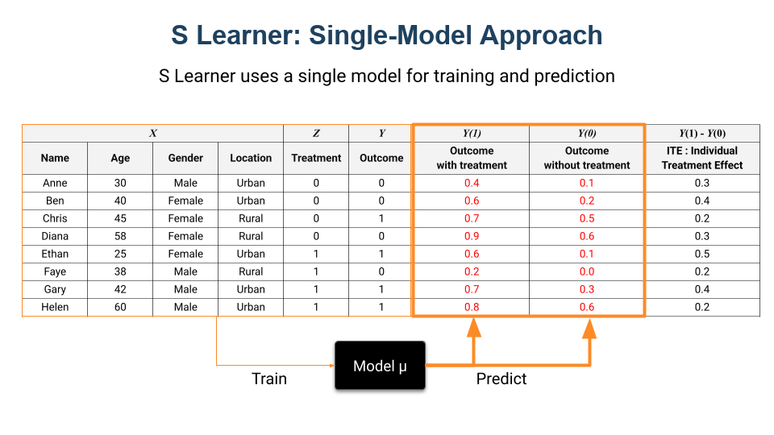
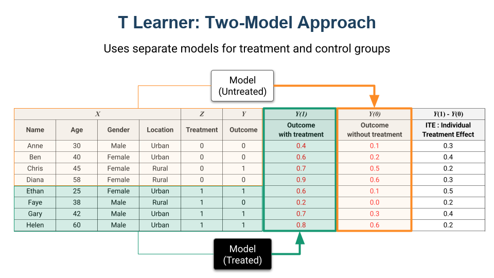

3.5 Meta-Learner für Treatment-Effekte
Über die deutsche Ausgabe
Diese Seite ist eine KI-Übersetzung der englischen Ausgabe von Marketing Science in Python. Die englische Ausgabe ist maßgeblich und hat bei Abweichungen Vorrang. Code, Notebooks und Text in Abbildungen bleiben auf Englisch. Englische Ausgabe lesen
Die Methoden der vorherigen Kapitel schätzen eine Zahl für eine ganze Gruppe: den durchschnittlichen Treatment-Effekt (ATE), also die durchschnittliche Wirkung eines Treatments über alle, die es erreicht hat. Aber im Marketing können Durchschnitte irreführend sein. Ein Coupon könnte die Käufe zum Beispiel im Durchschnitt um 5% steigern, aber diese Zahl verbirgt die eigentliche Geschichte. Manche Kunden reagieren vielleicht mit einem Lift von 20%, während andere keinen Effekt oder sogar einen Rückgang zeigen. Wenn Sie erkennen könnten, welche Kunden tatsächlich reagieren, könnten Sie Ihr Budget deutlich wirksamer einsetzen.
Meta-Learner versuchen, Treatment-Effekte für jeden einzelnen Kunden zu schätzen. Aber wie sieht das in der Praxis tatsächlich aus?
Treatment-Effekte: ATE, CATE, ITE
Um den Treatment-Effekt zu definieren, greifen wir auf das Potential-Outcomes-Framework zurück. Der Treatment-Effekt ist der durch ein Treatment verursachte Unterschied in den Ergebnissen: formal \(\tau = Y(1) - Y(0)\), wobei \(Y(1)\) das Ergebnis unter Treatment und \(Y(0)\) das Ergebnis unter Kontrolle ist. Wenn zum Beispiel die potenzielle Kaufrate mit Coupon 20% und die Rate ohne Coupon 10% beträgt, ist der Treatment-Effekt 10%.

Nun gibt es drei Ebenen der Granularität:
- ATE (durchschnittlicher Treatment-Effekt): der über alle Kunden gemittelte Effekt. „Hat der Coupon den Umsatz gesteigert?“
- CATE (bedingter durchschnittlicher Treatment-Effekt): der durchschnittliche Effekt für Kunden mit bestimmten Merkmalen. „Hat der Coupon bei städtischen Kunden unter 30 besser funktioniert?“
- ITE (individueller Treatment-Effekt): der Effekt für eine bestimmte Person. In der Praxis nicht beobachtbar, aber der CATE liefert unsere beste Schätzung.
Warum ist das wichtig? Weil sich nicht alle Kunden gleich verhalten. Ein preissensibler Kunde springt vielleicht auf einen Rabatt an, während ein markentreuer Kunde ohnehin zum vollen Preis gekauft hätte. Wenn Sie wissen, wer wer ist, können Sie Rabatte dort einsetzen, wo sie tatsächlich zusätzliche Verkäufe bringen, statt Marge an Kunden zu verschenken, die sowieso gekauft hätten.
Warum wir Meta-Learner brauchen
Betrachten Sie diese Frage: Hat ein Coupon den Umsatz gesteigert? Um sie zu beantworten, schauen wir auf Daten verschiedener Kunden, einschließlich ihrer Attribute (Alter, Geschlecht, Wohnort), des Treatments (Coupon oder kein Coupon) und des Ergebnisses (Kauf oder nicht).
Die Spalte \(Y(1)\) steht für das Ergebnis, wenn der Coupon verwendet wird, während \(Y(0)\) für das Ergebnis ohne Coupon steht. Hätten wir beide Spalten für dieselbe Person, wäre die Berechnung des Treatment-Effekts so einfach wie die Subtraktion der einen von der anderen. Die Herausforderung ist aber, dass wir für jede Person nur ein Ergebnis beobachten können.

Um das zu lösen, verwenden wir Meta-Learner. Das sind Machine-Learning-Frameworks, die vorhersagen, was passiert wäre, wenn ein Kunde das andere Treatment erhalten hätte. Indem wir diese fehlenden Kontrafakten ausfüllen, können wir den Treatment-Effekt für jede Person schätzen.
S-Learner: Mit einem einzigen Modell beginnen
Das „S“ im S-Learner steht für „Single“, weil er auf einem einzigen Machine-Learning-Modell beruht. Wir trainieren es auf allen Daten, wobei der Treatment-Indikator einfach als weiteres Merkmal enthalten ist. Um den Effekt für einen Kunden mit den Merkmalen \(x\) zu schätzen, fragen wir dieses eine Modell nach zwei Vorhersagen:
\[\hat{Y}(1 \mid X=x) = \text{predicted outcome if treated}\]
\[\hat{Y}(0 \mid X=x) = \text{predicted outcome if not treated}\]
Der geschätzte Treatment-Effekt ist die Differenz zwischen beiden:
\[\hat{\tau}(x) = \hat{Y}(1 \mid X=x) - \hat{Y}(0 \mid X=x)\]
Im Code holt der S-Learner diese zwei Vorhersagen aus demselben Modell: einmal mit dem Treatment auf 1 gesetzt und einmal auf 0 gesetzt.

Pseudocode:
# Train a single model with treatment as a feature
X = df[['age', 'gender', 'location', 'treatment']]
y = df['sales']
model = xgb.XGBRegressor()
model.fit(X, y)
df['sales_treated'] = model.predict(X.assign(treatment=1))
df['sales_control'] = model.predict(X.assign(treatment=0))
df['treatment_effect'] = df['sales_treated'] - df['sales_control']
ATE = df['treatment_effect'].mean()Der S-Learner ist der einfachste Einstieg und oft eine vernünftige Baseline. Aber er hat eine zentrale Schwäche: Wenn der Treatment-Effekt im Vergleich zu anderen Merkmalen klein ist, kann das Modell die Treatment-Variable am Ende ignorieren, besonders wenn Sie Regularisierung verwenden. Das heißt, Ihre CATE-Schätzungen können in Richtung null verzerrt sein.
T-Learner: Zwei getrennte Modelle
Das „T“ im T-Learner steht für „Two“. Statt eines Modells trainieren wir zwei getrennte Modelle: eines auf der Treatment-Gruppe und eines auf der Kontrollgruppe. Wir erhalten \(\hat{Y}(1 \mid X=x)\) aus dem Treatment-Modell und \(\hat{Y}(0 \mid X=x)\) aus dem Kontrollmodell und bilden dann die Differenz:
\[\hat{\tau}(x) = \hat{Y}(1 \mid X=x) - \hat{Y}(0 \mid X=x)\]

Pseudocode:
df_treated = df[df['treatment'] == 1]
df_control = df[df['treatment'] == 0]
# Train separate models, one per arm
model_treated = xgb.XGBRegressor()
model_treated.fit(df_treated[['age', 'gender', 'location']], df_treated['sales'])
model_control = xgb.XGBRegressor()
model_control.fit(df_control[['age', 'gender', 'location']], df_control['sales'])
df['sales_treated'] = model_treated.predict(df[['age', 'gender', 'location']])
df['sales_control'] = model_control.predict(df[['age', 'gender', 'location']])
df['treatment_effect'] = df['sales_treated'] - df['sales_control']
ATE = df['treatment_effect'].mean()Der T-Learner ist flexibler, weil jedes Modell unterschiedliche Muster für Treatment- und Kontrollgruppe lernen kann. Aber es gibt einen Kompromiss: Er kann eine hohe Varianz haben, besonders wenn Ihre Treatment- und Kontrollgruppe unausgewogen sind. Wenn Sie die Vorhersagen subtrahieren, können sich die Fehler beider Modelle addieren.
Der S-Learner ist also einfach, neigt aber dazu, Effekte zu unterschätzen. Der T-Learner vermeidet dieses spezielle Versagen, um den Preis verrauschterer Schätzungen. Was können wir als Nächstes tun?
Fortgeschrittene Meta-Learner
Über S und T hinaus gehen mehrere ausgefeiltere Methoden deren Grenzen an:
- X-Learner: Eine Erweiterung des T-Learners für unausgewogene Treatment-Gruppen. Er imputiert die fehlenden Kontrafakten und kombiniert sie mit Propensity-Score-Gewichtung. Funktioniert gut, wenn eine Gruppe viel größer ist als die andere.
- DR-Learner (Doubly Robust): Kombiniert Ergebnismodellierung und Propensity-Score-Schätzung. Konsistent, wenn eines der beiden Modelle korrekt spezifiziert ist, daher „doppelt robust“.
- DML (Double Machine Learning): Verwendet Cross-Fitting, um Overfitting-Verzerrung zu vermeiden, mit starken theoretischen Garantien. Rechenintensiver, im begleitenden Notebook etwa eine Größenordnung langsamer als der S-Learner, liefert aber echte Konfidenzintervalle.

Die Theorie sagt uns, was jede Methode optimieren soll. Aber der eigentliche Test ist zu sehen, wie sie auf demselben Datensatz abschneiden, wo die praktischen Unterschiede sichtbar werden.
Beispiel: Heterogene E-Mail-Effekte schätzen
Um zu sehen, wie sich diese Methoden verhalten, brauchen wir einen Datensatz, an dem wir ihre Arbeit überprüfen können. Das ist schwieriger, als es klingt. In echten Daten beobachten wir nie den wahren Treatment-Effekt eines Kunden, also können wir nicht sagen, ob ein Meta-Learner das richtige Muster wiedergefunden oder nur plausibles Rauschen erzeugt hat.
Wir lösen das mit einem semisynthetischen Beispiel auf Basis von Kevin Hillstroms MineThatData-E-Mail-Experiment, einem klassischen Marketing-Datensatz mit 64,000 Kunden, die zufällig einer Herrenartikel-E-Mail, einer Damen-E-Mail oder keiner E-Mail zugewiesen wurden. Wir behalten die echten Kundenmerkmale (Recency, Kaufhistorie, Kanal und die übrigen) und die echte randomisierte Zuweisung für den binären Kontrast Herren-E-Mail gegen keine E-Mail. Nur die Ergebnisse sind simuliert: Wir definieren eine Baseline-Kaufwahrscheinlichkeit und einen Treatment-Effekt \(\tau(x)\), der für Käufer von Herrenartikeln, kürzlich aktive Kunden und Multichannel-Käufer größer ist. Weil wir \(\tau(x)\) selbst geschrieben haben, kennen wir den wahren CATE jedes Kunden und können jeden Learner daran bewerten.
Das ist ein Lehrmittel. Das Ziel ist nicht, den durchschnittlichen Effekt besser zu schätzen, als es das Experiment ohnehin tut, sondern zu prüfen, ob ein Meta-Learner die Heterogenität wiederfindet, die wir eingepflanzt haben.
Begleit-Notebook: sec3.5_meta_learners.ipynb vergleicht S-, T-, X- und DR-Learner sowie CausalForestDML mit dem bekannten wahren CATE im semisynthetischen MineThatData-Experiment.
Auf GitHub ansehen
Alle fünf Learner finden den durchschnittlichen Effekt wieder und, nützlicher noch, das Muster auf Segmentebene. Das Streudiagramm unten vergleicht den geschätzten CATE mit dem wahren Effekt für einen repräsentativen Learner. Die Schätzungen sammeln sich um die 45-Grad-Linie, die Kunden werden also in ungefähr der richtigen Reihenfolge gereiht, mit einer vertikalen Streuung, die das Rauschen binärer Ergebnisse widerspiegelt.

Die Mittelung innerhalb von Segmenten macht die Wiederfindung klarer: Aufgeteilt nach Herrenkäufer-Status, Recency, Kaufhistorie und Kanal folgt der geschätzte Effekt eng der Wahrheit und reproduziert die höhere Reaktion, die wir bei Herrenkäufern, kürzlich aktiven Kunden und Multichannel-Käufern eingepflanzt haben.

Welcher Learner die Kunden am besten reiht, hängt von den Daten ab. Am wahren CATE auf dem Holdout-Set bewertet, begünstigt dieses saubere, ausgewogene Experiment die einfachen Learner:
| Methode | Korr(gesch., wahr) | MAE | Mittlerer gesch. CATE |
|---|---|---|---|
| S-Learner | 0.77 | 0.030 | 0.108 |
| X-Learner | 0.69 | 0.038 | 0.109 |
| CausalForestDML | 0.60 | 0.051 | 0.109 |
| T-Learner | 0.59 | 0.050 | 0.109 |
| DR-Learner | 0.58 | 0.049 | 0.109 |
Alle fünf finden den durchschnittlichen Effekt von rund 11 Punkten wieder, den wir eingepflanzt haben; was sie trennt, ist die Korrelation mit dem wahren CATE, und die bestimmt die Qualität der Reihung. S-Learner und X-Learner liegen vorn, während die Zwei-Modell- und Cross-Fitting-Learner einen Varianzpreis zahlen. Auf verrauschteren oder unausgewogenen Daten kann sich die Reihenfolge ändern, und genau deshalb prüfen Sie die Wiederfindung, statt einer Methode aufgrund ihres Rufs zu vertrauen.
Was vor dem Vertrauen in CATE zu prüfen ist
Dieses Beispiel war absichtlich nachsichtig: randomisiertes Treatment, perfekte Überlappung und eine bekannte Antwort. Echte Projekte sind das selten. Bevor Sie auf Basis von CATE-Schätzungen handeln:
- Ein Meta-Learner erzeugt keinen kausalen Vergleich. Er modelliert, wie der Effekt innerhalb eines Vergleichs variiert, den Sie bereits haben; auf Beobachtungsdaten erbt der CATE also jedes Confounding-Problem, das der zugrunde liegende Vergleich trägt.
- Der individuelle Treatment-Effekt wird in echten Daten nie beobachtet. Wir konnten die Learner hier nur bewerten, weil wir die Wahrheit simuliert haben.
- CATE ist eine Modellschätzung, keine Messung. Lesen Sie ihn auf Gruppen- oder Segmentebene, nicht als wörtliche Zahl für einen einzelnen Kunden.
- Plausibilisieren Sie den Durchschnitt. Wenn der mittlere geschätzte CATE weit von einer einfachen Mittelwertdifferenz in einem Experiment entfernt ist, stimmt etwas nicht.
- Prüfen Sie die Stabilität über Learner hinweg. Wenn S, T, X und der Causal Forest bei der Reihung nicht übereinstimmen, vertrauen Sie noch keinem von ihnen.
- Achten Sie auf die Überlappung. Wo Treatment- und Kontrollkunden nicht nebeneinander existieren, ist der CATE eine Extrapolation und keine Schätzung.
Das Wichtigste in Kürze
- Der ATE fragt, ob das Treatment gewirkt hat; der CATE fragt, für wen. Meta-Learner schätzen diese Variation innerhalb eines kausalen Vergleichs, den Sie bereits haben, und keiner von ihnen repariert Confounding, das Sie nicht gemessen haben.
- CATE ist eine Modellschätzung auf Gruppenebene, und der wahre Effekt wird in echten Daten nie beobachtet, also verdient sich kein Learner Vertrauen durch seinen Ruf. Prüfen Sie den Mittelwert gegen das Experiment, die Stabilität über Learner hinweg und die Überlappung.